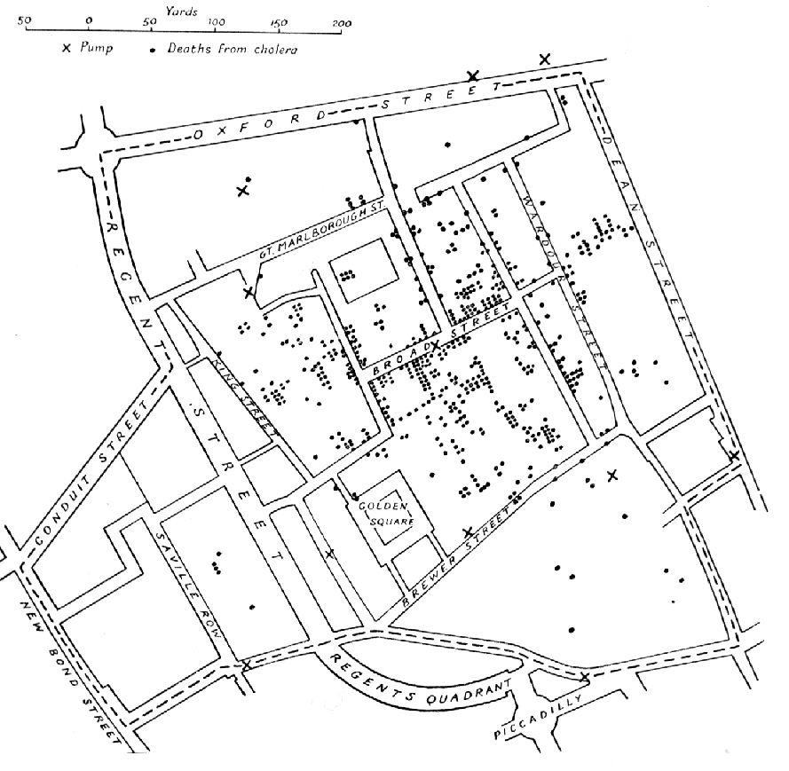

Mário, Brussels:
Generalist with a non-scientific background
Chasing data design choices with a lasting social impact
Images that changed what you could see — and how you saw it.
Visual histories of evidence, passion and imagination
01 / 09


Image unavailable. View the original at its source ↗
Cholera deaths around Broad Street
John Snow · 1855 · Wikimedia Commons View original ↗ Public domain ↗